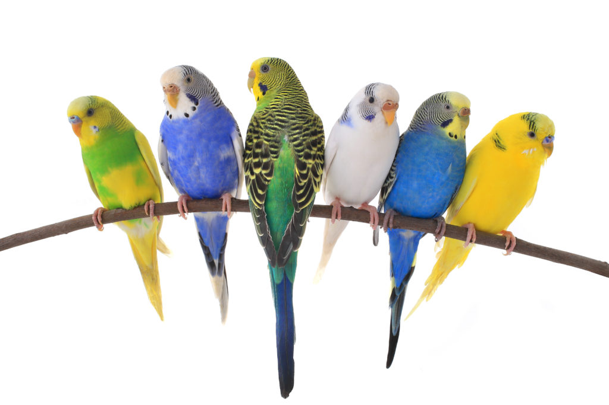

Op deze site kan je informatie viden over mijn huisdieren. Het is verdeeld over 4 delen.
Eerst kan je lezen over de algemene informatie over mijn huisdieren zoals naam etc. De achtergrond van het diertje zal ook voorkomen. Je zult ook over de natuurlijke leefomgeving van het diertje lezen.
Daarna gaat het over de ras van het diertje. Dit is meer algemene informatie over het ras, niet alleen van mijn huisdieren.
Daarna kan je lezen over de karaktereigenschappen in het algemeen en de karaktereigenschappen van mijn huisdieren en van het diersoort. Het zal waarschijnlijk verschillen tussen mijn huisdieren en de karaktereigenschappen van het dier in het algemeen.
Ten slotte kan je lezen over ziektes die voorkomen in het dier en ziektes/symptomen die in mijn huisdieren voorkwamen. Dit zal nuttig informatie zijn als je zelf een grasparkiet hebt die ziek is of als je het wilt voorkomen.